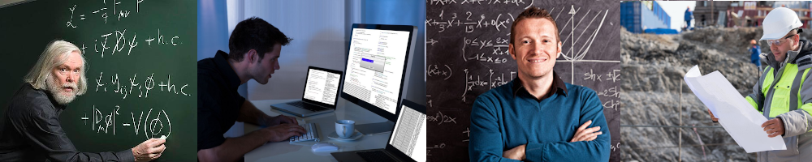

1C - rozszerzone treści nauczania z matematyki, fizyki, informatyki
Powinieneś wybrać klasę o takim nachyleniu przedmiotowym, jeśli:
- marzysz o studiach informatycznych, matematycznych, fizycznych, architekturze,
budownictwie, automatyce, robotyce, budownictwie, elektrotechnice, transporcie morskim,
astronomii, na takich uczelniach jak SGGW, AGH, Politechnika Warszawska i Politechnika
Wrocławska, Politechnika Rzeszowska, Akademia Ekonomiczna;
- jesteś ciekawy laboratoryjnych zajęć na KUL-u z fizyki;
- marzysz, by zmierzyć się z najlepszymi w konkursach matematycznych, fizycznych
i informatycznych, np.: w Podkarpackim Konkursie Matematycznym im. Franciszka Leji,
Ogólnopolskiej Olimpiadzie Fizycznej, w Ogólnopolskiej Olimpiadzie o Diamentowy
Indeks AGH;
- chętnie pracujesz przy komputerze;
- w przyszłości chcesz przystąpić do egzaminu maturalnego z geografii, biologii, języka
angielskiego na poziomie rozszerzonym.
Przy rekrutacji do klasy 1C przedmioty punktowane to: język polski, matematyka,
język obcy, historia/fizyka/biologia/geografia/chemia
| Rok/klasa | 1 | 2 | 3 | 4 |
|---|
| j.polski | 4 | 4 | 4 | 4 |
| j.angielski | 3 | 3 | 3 | 3 |
| j.niemiecki | 2(1j) | 2(1j) | 2(1j) | 2(1j) |
| j.francuski | 2(1j) | 2(1j) | 2(1j) | 2(1j) |
| matematyka | 3 | 4 | 3 | 4 |
| wf | 3 | 3 | 3 | 3 |
| godz.wych | 1 | 1 | 1 | 1 |
| biologia | 1 | 2 | 1 | - |
| chemia | 1 | 2 | 1 | - |
| geografia | 1 | 2 | 1 | - |
| historia | 2 | 2 | 2 | 2 |
| wos | 1 | 1 | - | - |
| fizyka | 1 | 1 | 2 | - |
| przedsięb. | - | 1 | 1 | - |
| plastyka | 1 | - | - | - |
| informatyka | 1 | 1 | 1 | - |
| e_dla_bezp | 1 | - | - | - |
| religia | 2 | 2 | 2 | 2 |
| wych. rodz. | 14r | 14r | 14r | - |
| doradz. zaw. | 2r | 2r | 3r | 3r |
| r_matematyka | 2 | 2 | 3 | 3;1dyr |
| r_fizyka | 1 | 2 | 2 | 3;1dyr |
| r_informat. | 1 | 1 | 2 | 3;1dyr |